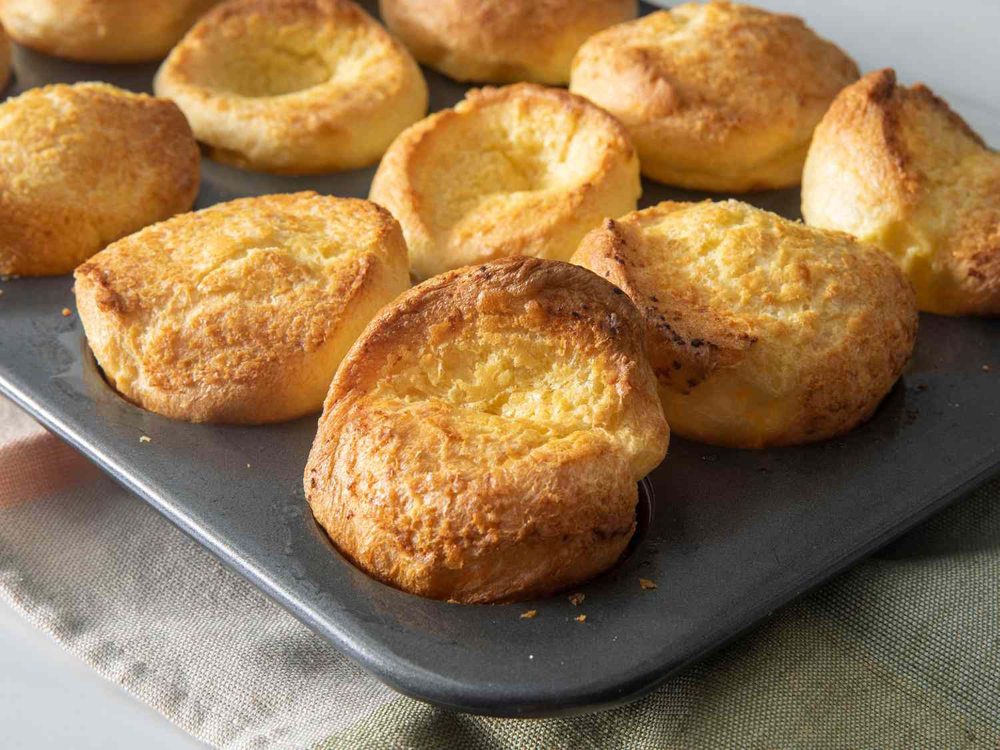

Yorkshire Puddings

Description
Yorkshire puddings are a traditional British side dish, often served alongside
a Sunday roast or Christmas dinner.
Makes 12 servings
Ingredients
- 2 Eggs
- 1 cup Milk
- 1 cup Flour
- 2 tbsp butter (or ~1 cup beef drippings)
- 1/4 tsp salt
Steps
- Preheat an oven to 400° F.
- Mix the eggs, flour, milk, and salt together in a bowl.
-
Ideally, allow the batter to rest overnight in the refrigerator, then
bring back to room temperature before proceeding. Doing this will help
the puddings to rise.
-
Evenly divide the butter or beef drippings into the cups of a 12-cup
muffin tin. Place the tin in the oven until the fat is sizzling and smoking,
about 15 minutes.
-
Quickly pour the batter into the muffin cups. It should begin sizzling
right away. Move quickly to prevent loss of heat.
-
Bake for 8 minutes. Reduce heat to 350° F, and bake for another 20 minutes.
Home